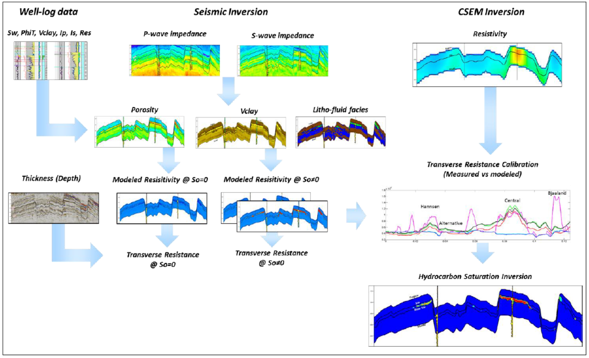
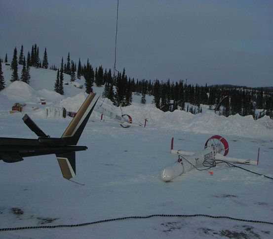

Case Histories
Case histories provide the context for our development of educational and research material presented in em.geosci. Each case history focuses upon a particular problem to be solved and provides the motivation for working with particular surveys and shows the effectiveness of electromagnetics in answering the posed questions. For many people, a case history will be the entry point to this site. To facilitate transfer of knowledge we have developed a common framework (Seven Step Process) in which each case history is presented. Links are provided so that a reader can investigate fundamental aspects of EM, the survey, or interpretation. In some cases we are able to provide data sets and analysis/inversion software to enhance the user experience and to address important issues regarding reproducability. Case histories for our initial launch of em.geosci are those that have been developed by past and present students at the Geophysical Inversion Facility. The titles, and EM systems used are provided below.
Gallery
Albany

Airborne and Ground Time-Domain EM results from the Albany Graphite Discovery
- Contributors
author: Jean Legault, Josh Lymburner, Kevin Ralf, Peter Wood, Marta Orta, Alexander Prikhodko, Nasreddine Bournas, Stanislawa Hickey
reviewer: Devin C. Cowan
- Tags
Geophysical Surveys: Airborne TDEM, ground-based TDEM, aeromagnetic
Applications: Mineral exploration, hydrothermal graphite porphyry
Keywords: Mineral exploration, airborne, ground-based, TDEM, porphyry
Location: Albany graphite deposit, Ontario, Canada
Aspen
{kind=link}
From exploration to reclamation: using EM methods at SAGD sites in the Athabasca oil sands
- Contributors
author: Sarah G. R. Devriese
- Tags
geophysical survey: Airborne TDEM
application: Hydrocarbons
keyword: Oil Sands
location: Canada
Balboa
{kind=link}
- Contributors
author: Jean Legault, Chris Wijns, Carlos Izarra, Geoffrey Plastow
reviewer: Seogi Kang, Douglas Oldenburg, Lindsey J. Heagy
- Tags
geophysical survey: Airborne NSEM
application: Mining
keyword: ZTEM, porphyry, copper, gold
location: Panama
Barents Sea
{kind=link}
- Contributors
author: Pedro Alvarez, Amanda Alvarez, Lucy Macgregor, Fransisco Bolivar, Rob Keirstead, Thomas Martin
reviewer: Devin C. Cowan
- Tags
Geophysical Surveys: CSEM, 2D seismic
Applications: Reservoir characterization, marine EM
Keywords: Hydrocarbon, CSEM, reservoir, oil and gas
Location: Hoop Fault Complex, Barents Sea, Norway
Bookpurnong

- Contributors
author: Dikun Yang
- Tags
geophysical survey: Airborne FDEM, Airborne TDEM
application: Groundwater
location: Australia
DO-27/DO-18 (TKC)

Inversion of airborne geophysics over the DO-27/DO-18 kimberlites (TKC)
- Contributors
author: Dom Fournier, Sarah G. R. Devriese, Seogi Kang
- Tags
Geophysical Surveys: Airborne/ground gravity, Airborne magnetics, Airborne FEM, Airborne TEM
Applications: Diamond exploration
Keywords: Kimberlite, Diamond, Petrophysics
Location: Northwest Territories,Canada
Elevenmile Canyon

Three-Dimensional Inversion of ZTEM Data at the Elevenmile Canyon Geothermal System, Nevada
- Contributors
author: Sarah G. R. Devriese
- Tags
geophysical survey: Airborne NSEM
application: Geothermal
location: United States of America
keyword: ZTEM
Furggwanghorn
{kind=link}
- Contributors
author: Alan G. Green, Kaspar Merz, Hansruedi Maurer
reviewer: Seogi Kang, Douglas Oldenburg
- Tags
geophysical survey: GPR
application: Geotechnical
location: Switzerland
Kasted
{kind=link}
3D geological modelling of a complex buried-valley network delineated from borehole and AEM data
- Contributors
- Tags
Geophysical Surveys: Airborne TDEM
Applications: Groundwater Mapping
Keywords: Airborne TDEM, Groundwater
Location: Aarhus, Denmark
Lalor

- Contributors
author: Douglas Oldenburg, Dikun Yang
reviewer: Devin C. Cowan
- Tags
Geophysical Surveys: Airborne TDEM
Applications: Mineral exploration
Keywords: Airborne TDEM, massive sulphide
Location: Lalor Lake, Manitoba, Canada
Mt. Isa

2-D and 3-D IP/resistivity for the interpretation of Isa-style targets
- Contributors
author: Dom Fournier
- Tags
geophysical survey: DC, IP
application: Mining
location: Australia
Noranda
{kind=link}
- Contributors
author: Elliot Holtham
reviewer: Sarah G. R. Devriese
- Tags
geophysical survey: ZTEM
application: Mineral deposits
keyword: Noranda
location: Canada
Norsminde
{kind=link}
- Contributors
author: Esben Auken, Anders Vest Christiansen, Cyril Schamper, Flemming J⌀rgensen, Flemming Effers⌀
reviewer: Devin C. Cowan
- Tags
Geophysical Surveys: Airborne TDEM
Applications: Groundwater Mapping
Keywords: Airborne TDEM, Groundwater
Location: Norsminde, Denmark
SAGD
{kind=link}
Detecting and imaging time-lapse conductive changes using electromagnetic methods
- Contributors
author: Sarah G. R. Devriese
- Tags
geophysical survey: Borehole EM
application: Hydrocarbons
keyword: Oil Sands
location: Canada
Saurashtra

Exploration with Controlled Source Electromagnetics Under Basalt Cover in India
- Contributors
reviewer: Devin C. Cowan, Douglas Oldenburg
- Tags
geophysical survey: LOTEM
application: Hydrocarbon
keyword: LOTEM, Hydrocarbon
location: Saurashtra Peninsula, India
Wadi Sahba
{kind=link}
- Contributors
author: Daniele Colombo
reviewer: Devin C. Cowan, Douglas Oldenburg, Seogi Kang, Lindsey J. Heagy
- Tags
geophysical survey: Seismic, ATEM
application: Hydrocarbon
keyword: Wadi Sahba, Multi-physics, Joint Inversion
location: Arabian Gulf, Qatar
Red Sea
- Contributors
author: Daniele Colombo
reviewer: Devin C. Cowan, Douglas Oldenburg
- Tags
geophysical survey: WAZ, CSEM, MT, Gravity
application: Hydrocarbon
keyword: Red Sea, Multi-physics, Data-Driven Inversion, Model-Driven Inversion
location: Northern Arabian Gulf
West Plains
{kind=link}
- Contributors
author: Douglas Oldenburg, Dikun Yang
reviewer: Devin C. Cowan
- Tags
Geophysical Surveys: VTEM, RESOLVE
Applications: Mineral exploration
Keywords: Airborne EM, orogenic gold, greenstone belt
Location: Nunavut, Canada